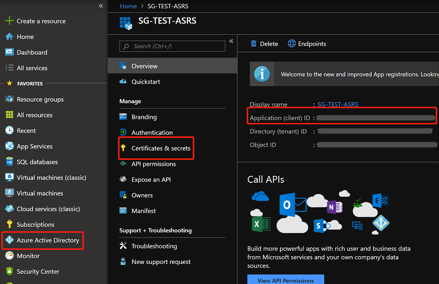
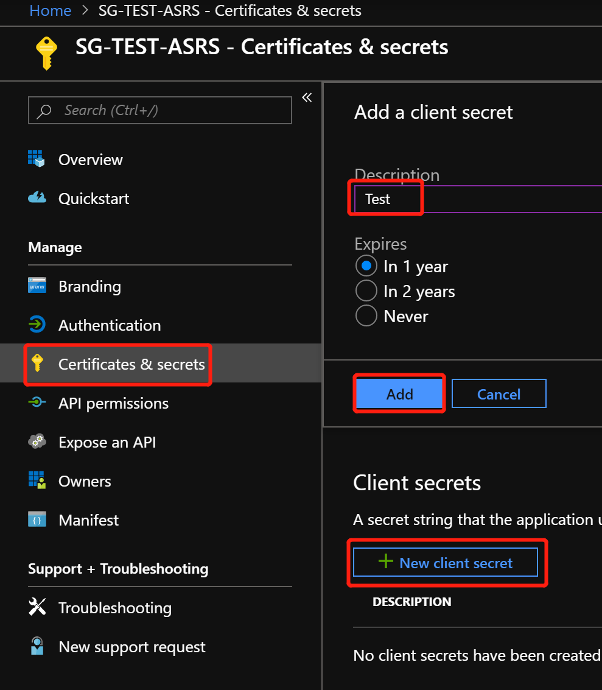
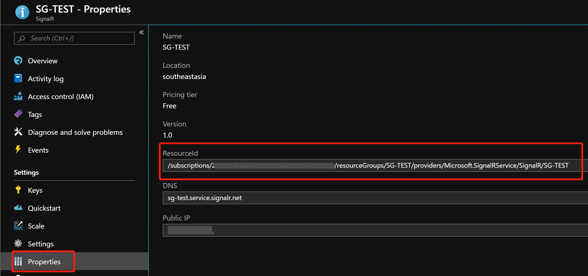

Azure很多云服务都带有自动缩放（Auto-Scaling）的功能。自动缩放可以在有大量请求进入的时候自动缩放，在需求降低的时候自动收缩。在满足业务量需求的同时，也节约了订阅的开销。目前Azure SignalR Service还没有实现这一功能，如果需要的话只能自己动手来实现。
写在最前面：虽然可以通过Az PowerShell实现ASRS的auto-scaling, 但是无法避免在scale-out的时候ASRS实例的重启。这一点是由于目前ASRS的设计决定的。在修改Unit Count的时候，ASRS会重启。
监测Max Connection
ASRS的缩放(Scale Out)是通过提高Unit的数量。从而提高实例承载的最大连接数目以及最大的消息数，以及实例的性能。监测ASRS负载时，最常用的指标是Max Connection, 通过检测当前的connection的数目，判断是否已经到达最高的阈值来决定是否需要缩放.
下面是最大connection数量和最大Message数量的列表。
| FREE | STANDARD | |
|---|---|---|
| Concurrent Connections per Unit | 20 | 1,000 |
| Messages / Unit / Day | 20,000 | 1,000,000 |
值得注意的是，Free tier不支持缩放，能够缩放的只有Standard tier。 在缩放的时候Unit的数目并不是任意可调，而是只有7档可以选择。分别是1 unit, 2 units, 5 units, 10 units, 20 units, 50 units, 100 units。 允许到达的connection的上限分别为：
| Unit | 1 | 2 | 5 | 10 | 20 | 50 | 100 |
|---|---|---|---|---|---|---|---|
| Max Connection | 1,000 | 2,000 | 5,000 | 10,000 | 20,000 | 50,000 | 100,000 |
那么我们只要监控当前的Connection数量是否接近当前最大值，以此来判断是否需要提高Unit。
Azure PowerShell
可以通过Azure PowerShell提供的API来自动监测connection的方式。当connection大于某个值的时候，提高unit的数量。
登录账号
第一步需要通过Azure PowerShell的Connect-AzAccount来进行登录。因为要设计的是自动监测的工具，所以场景是没有UI界面互动的情况。
使用用户名密码进行登录
最简单直白的方法就是提供用户名和密码进行登录。可以用下面的命令来进行登录操作：
1 | $User = "YOURUSERNAME@XXXX.com" |
- User : 登录Portal的账号
- Password : 不用多说了
- Tenant : 我在找tenant id的时候花了不少时间，最后参考这里的步骤找到了自己的tenant id.
- Subscription ID: 看这里。
使用Service Principal进行登录
直接用用户名密码进行登录，可能会觉得不太安全。那么可以使用另外一种方式，通过service principal和对应的credential进行登录。代码如下：
1 | $azureAplicationId ="Azure AD Application Id" |
首先要创建一个Azure AD Application 和 service principal，用来访问资源。可以看这里.
创建好以后可以在这个Application里面找到需要的输入参数Application ID和Application Password (secret),代替了原先的account和password.
Azure Application ID. 看图说话。
Application Password. 看图说话。需要注意的是这里的secret 只有生成的第一次是明文的，需要立刻保存下来。之后再进来就被打上码了。

获取ASRS资源的状态
通过调用Get-AzResource的API可以获取signalr serivcie的状态的对象。
1 | # Get information about the current resource state |
- Resource Id : 获取方式如图

获取Connection的当前值
思路是通过Azure Metric来获取当前的connection的数值。可以通过调用Get-AzMetric来完成。
1 | # Get metrics for the last 5 minutes |
提高Unit
可以通过Set-AzResource 来修改 ASRS的Unit count。不过需要注意的是，ASRS在修改Unit Count的时候instance也会同时重启。所以在修改的时候，Server Connection和Client Connection都会掉线。Server Connection会自动重连。这一点是SignalR SDK实现的。Client端的连接需要客户代码实现重连机制。好消息是，传闻在最新版的Client SDK中，加入了client自动重连的逻辑。
1 | # Change the resource unit count |
如何运行
powershell脚本完成的功能包括 :
- 登录
- 获取ASRS资源状态
- 获取ASRS当前的Connection
- 必要时，调用Set-AzResource调整Unit Count.
所以需要周期性的运行这段脚本。可以选择将脚本运行在本地，或者Azure Function App上面。
完整代码
1 | $User = "YOURUSERNAME@XXXX.com" |